A small, real Earth and the real solar system, for the Quest browser and the desktop. Walk a beach or a Paris street, sail, fly, drive, take a starship to the Moon and walk about inside it, and put anything you like into the world. Open index.html: no server.
You start on a sand beach at the edge of a small island. There is nothing to win. You can walk, run, jump onto rocks, swim, climb into a boat, light a fire, draw in the sand with a stick, launch fireworks, fly a drone, and, if you want to, point a controller at the sky and fly away from the island entirely: past the clouds, past the point where the sky turns black, until your world is a small planet with a sun, a moon and a few neighbours.
Nothing is loaded from a file. The sky, the waves, the sand, the trees, the rocks, the buildings, the music of the wind and the sound of the engine are all generated by code when the page opens. That is why a world this size fits in a single file you can host anywhere with https and open in the Quest browser.
0 serversDouble-click index.html. Everything is in the scripts, with three.js from a CDN. No build step.
24 ha real day (or 1 hour, or 8 minutes: your choice), on a real calendar from 1900 to 2100, with time speeds up to 4096×.
1 / 240the size of the real Earth: 26.5 km radius, with its real coasts, mountains, cities and airports.
1 → 9.18versions, each one a conversation turn.
The beach, the day, the night
Where it started, and still where you begin.
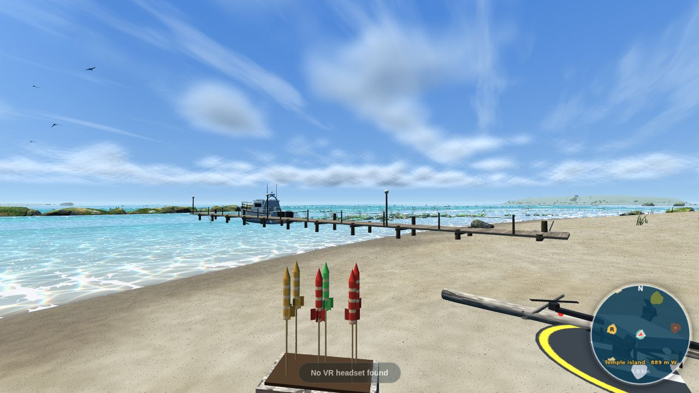
Midday. Rippling water with caustics traced onto the shallows, a volumetric sky with clouds you can see the shapes of.Sunset. Gold to orange to peach, with the reds and purples kept low so it reads as a real evening. God rays come through gaps in the cloud.
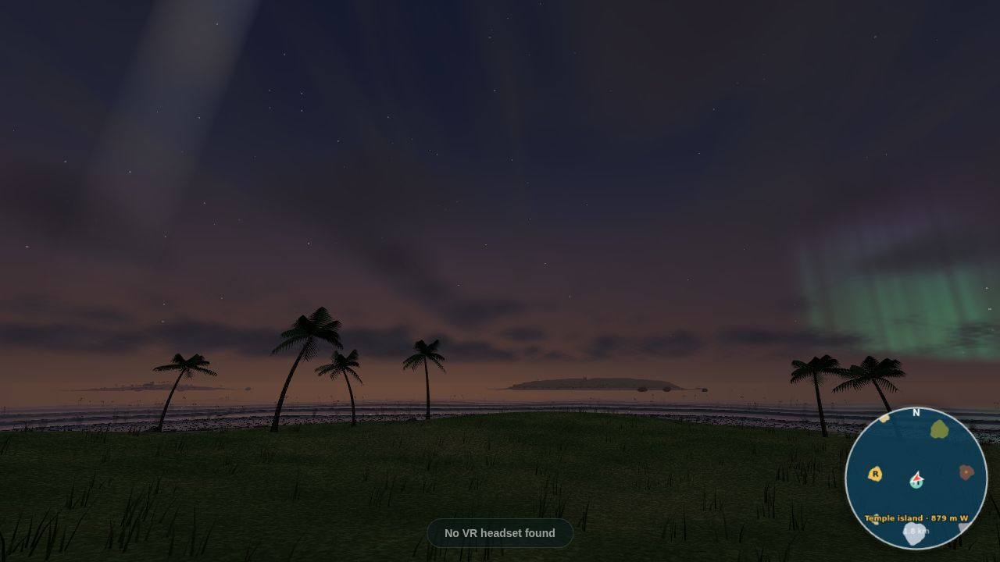
The lighthouse. A textured tower on a rock-ringed hill, with a cone-shaped beam that fades out and sweeps round at night.
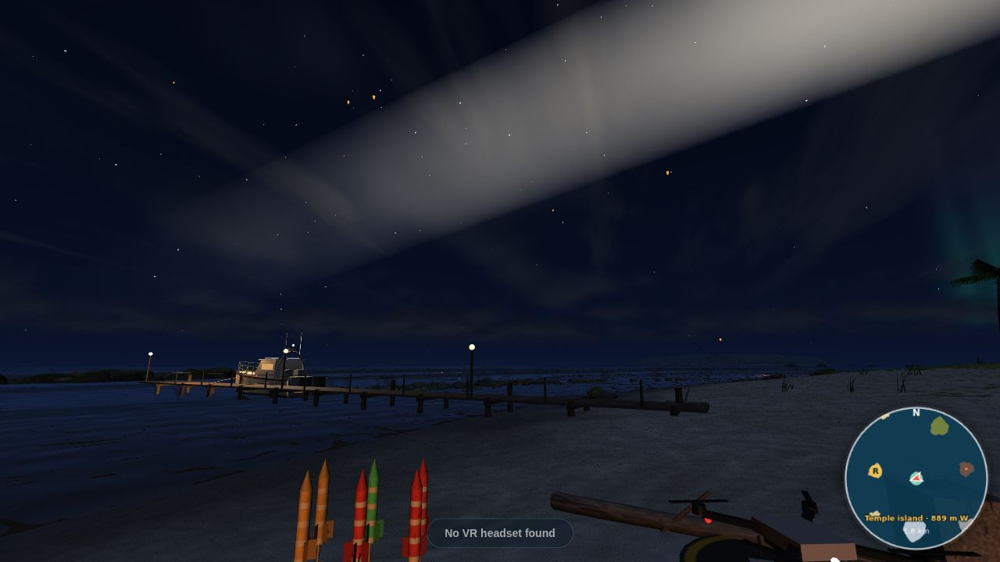
Festival lanterns. Chinese lanterns rise into the sky, lotus lanterns drift on the water, and red ones hang on bamboo along the beach. They are off by default; turn them on in the menu.
Sand that remembers you
Your footsteps are stamped into a texture that wraps around you, and the sand shader reads it as hollows: damp, packed sand at the bottom, a lip around the edge. A stick lies on the beach so you can draw. The tide, the rain and time slowly smooth it all away again.
A fire for the night
The campfire is a real light source for the sand, the water and nearby lamps. Rockets can be lit from it.
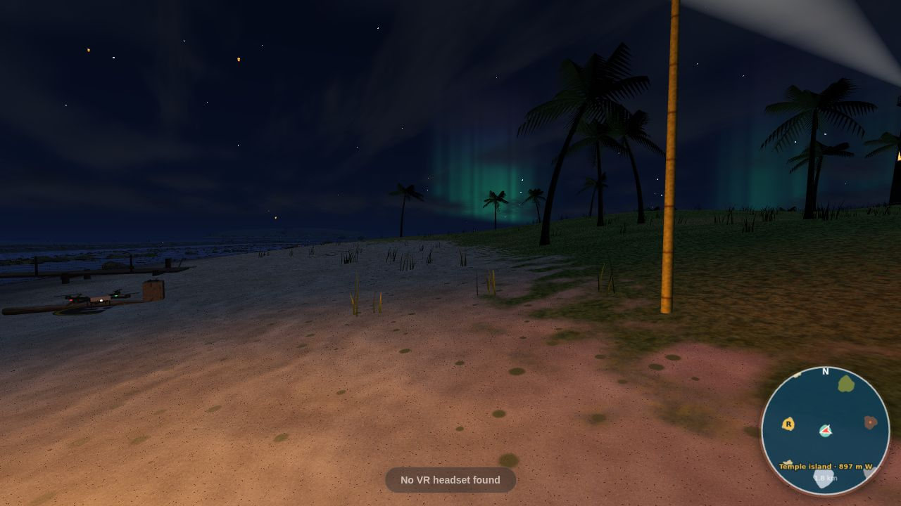
The campfire on the south beach, with its stones and logs.
The sea, under and over
Borrowed from your Coastline project and extended.
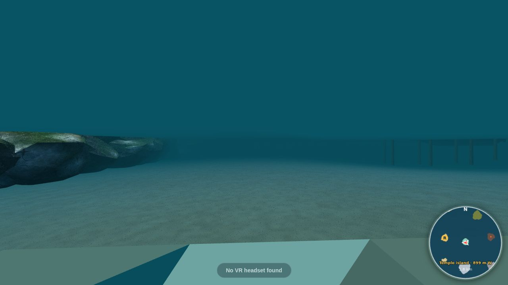
Swimming. Wade out and you float with your eyes just above the surface, riding the waves. Hold the triggers and sweep your arms to push yourself along. Dive and the world turns to teal murk, with a bright window to the sky above and muffled sound.
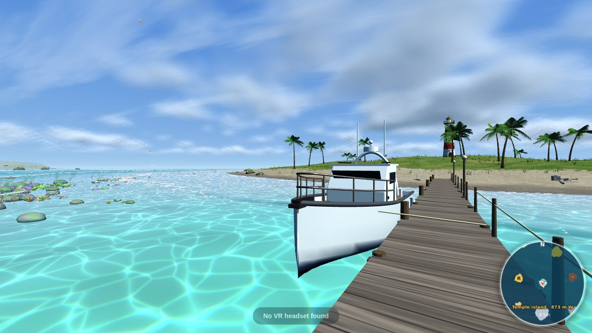
The dock and the boat. A timber pier in a sheltered, dredged basin behind a breakwater. Press Y to take the helm anywhere at sea, and again to step away. The menu can send it home to the dock.
The reef (seven kinds of coral), kelp forests, fish schools and leaping fish all come from Coastline and now follow you to whichever island you are at. So do the gulls, which circle where the fish are jumping and dive.
The wider world
Islands that appear as you travel, and are the same every time.
The world is a grid of cells. Each cell is hashed together with a world seed to decide whether it holds an island, what kind, how big, and where. An island's height is a single formula written twice, once in JavaScript for walking and building the land, and once in GLSL for the water, so the waves break exactly where the shore is. Nothing needs to be loaded to know where an island is; the land is built a little at a time as you approach, out in the haze where you cannot see it happen.
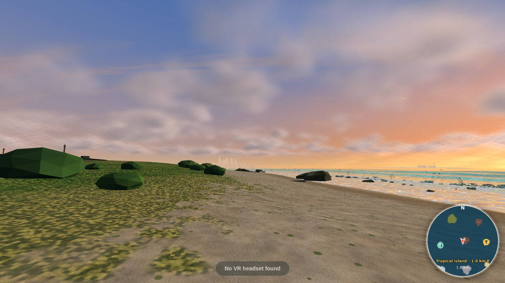
Volcano. Smoke, lava flows down the slopes, a red glow in the dark.
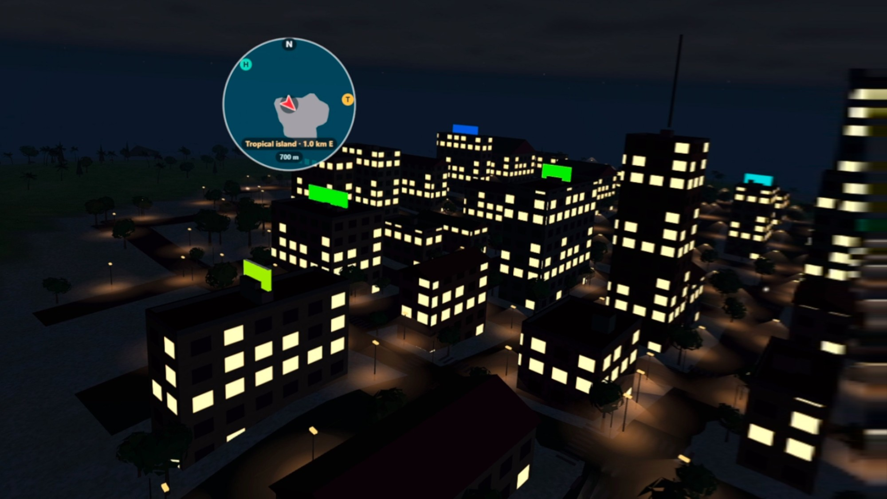
The city at night. Uneven blocks, pitched and flat roofs, lit billboards, an aerial with a red light, street lamps pooling warm light on the road, and trees along the pavements.
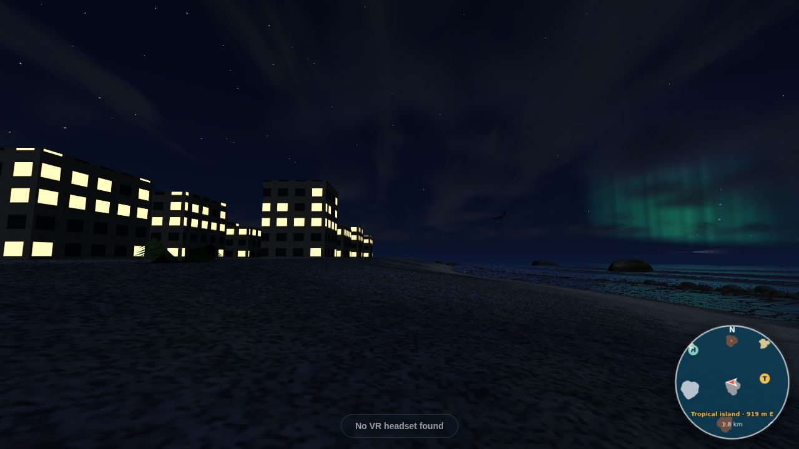
City island. Since 7.6 the city fills only a ragged patch of its island, with uneven blocks, avenues, buildings of every size with pitched or flat roofs, parks and a fountain, street trees, crosswalks, traffic lights, lamps that light the road, cars with headlight beams, and lit windows you can see from far out to sea.
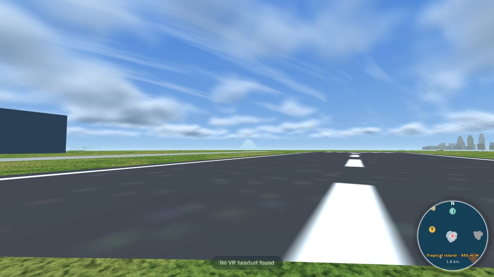
Airport. Runway, tower, hangar and terminal, with planes landing and taking off on a loop.
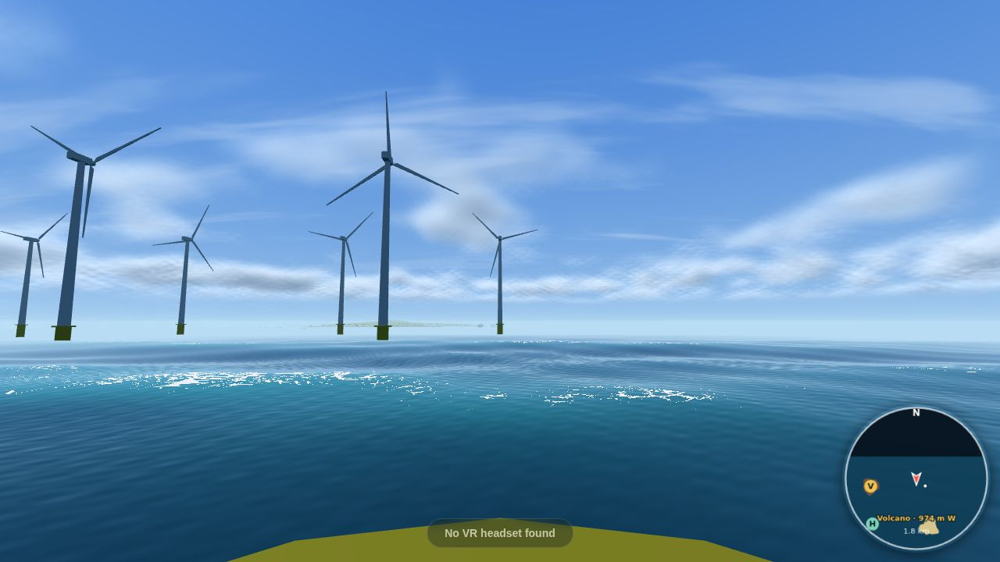
Wind farm. Turbines turn into the wind. There is also an oil rig you can stand on, ships, and airliners overhead.
Other islands are tropical (forests, rivers, farm fields, sea cliffs), temple islands with stepped terraces, and swamps with mangroves. Some have a coast road with power lines, guard rails and cars, built the way Coastline builds its roads: resting on top of the land, bridging dips.
Places worth finding
Hand-made, set into the generated land.
On top of the generated islands sit a few authored places. Each is placed by rules (flat enough, near water or deep in forest, away from the others), the ground is levelled and blended under it, trees keep clear, and a dirt path leads to it. What you do there is remembered between visits.
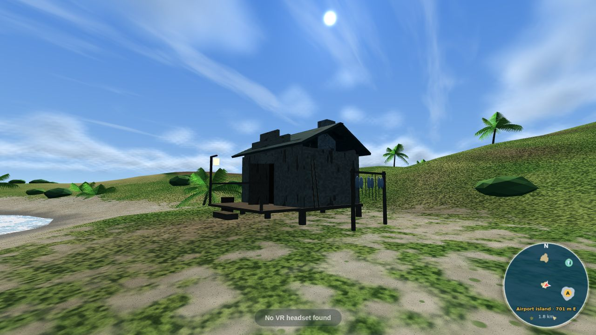
Fishing cabin. A weathered hut with a porch lantern you can light, a drying rack, a pier and a dinghy.
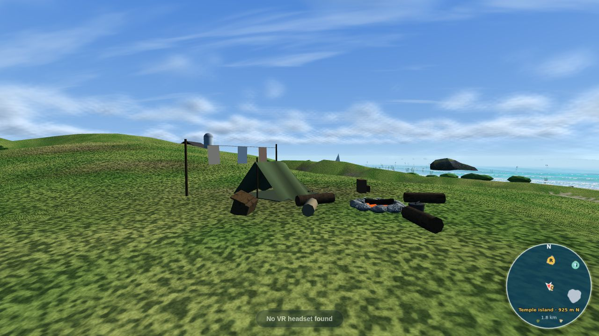
Abandoned campsite. A collapsed tent, a cold fire ring to relight, log seats, and a diary.
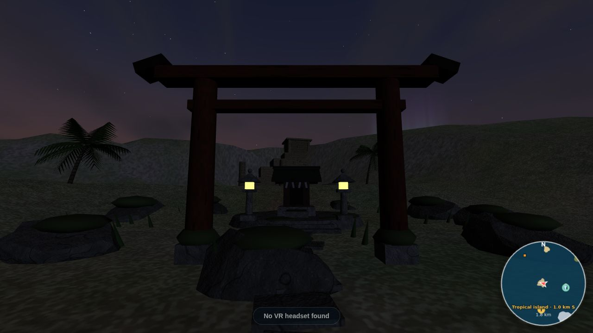
Forest shrine. A gate, stone lanterns and a mossy shrine in a clearing. Make an offering and the lanterns wake and fireflies appear.
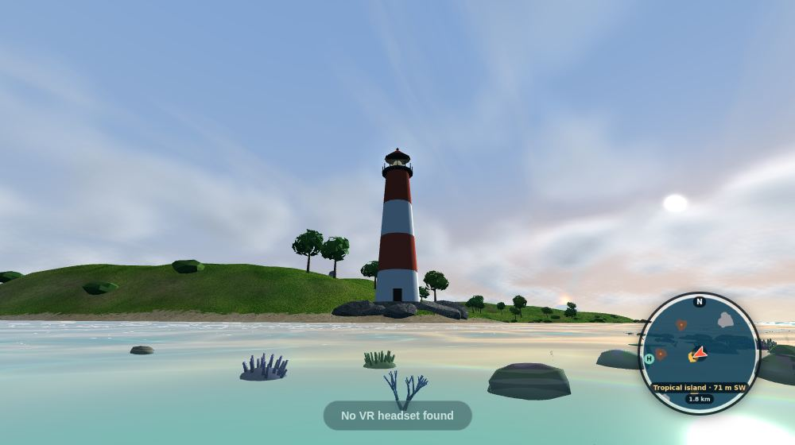
Lighthouse. A banded tower on the rocks, with a beam that sweeps at night and a keeper's log to read.
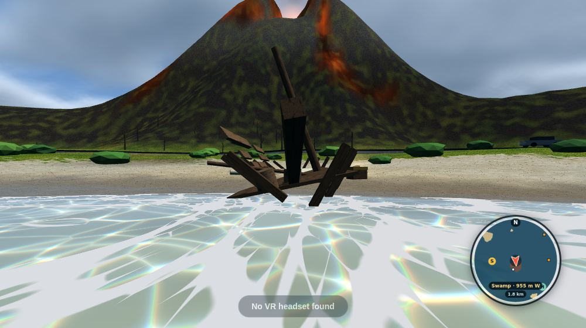
Shipwreck. Ribs, planks and a snapped mast half sunk where the sand meets the sea, with a chest and a log to search.
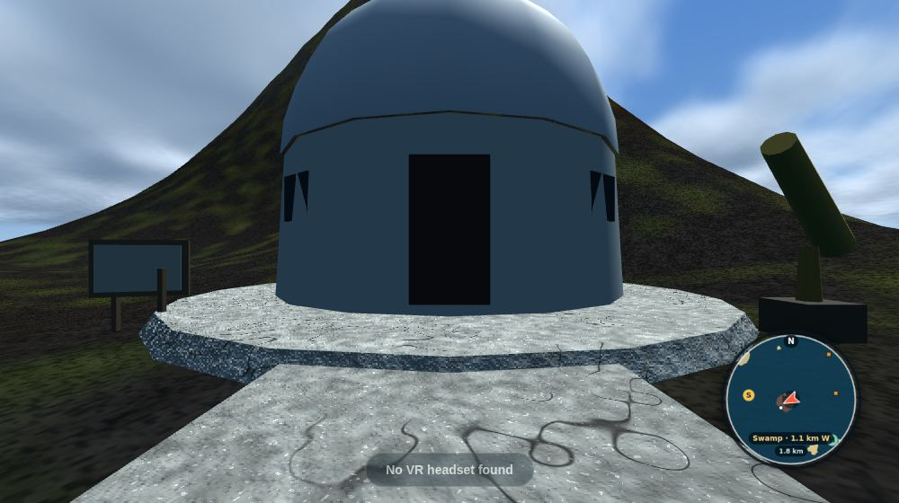
Observatory. A dome on a stone terrace, a telescope to look through and a star chart with one constellation circled.
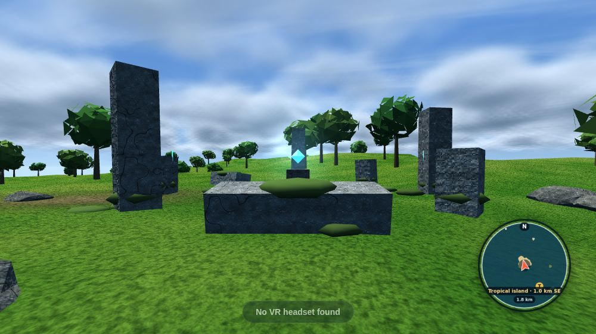
Hidden ruins. A ring of standing stones in the woods around a rune stone that wakes when you touch it.
The first time you come near one, the game tells you what you found and how many places you have found so far. Each has a "Nearest:" entry in the teleport menu, and a mark on the minimap.
A real planet
Since 7.0 the world is a sphere, and you ride on it.
The planet is a cube-sphere: six square faces, each 32 by 32 cells, wrapped into a globe about 26.5 km in radius. Each face is a flat map in metres, so the walking, swimming and building code you already had keeps working on it, and the planet itself is a true sphere. Walk or fly off the edge of one face and you are carried onto the next, with your heading, your speed and your boat turned to match. Every face is ringed by a band of open sea, so the join is never in view of land. You can circle the planet and come back to where you started.
The curve of the world is the sphere's own curve and no longer changes as you climb. The horizon is a few hundred metres away at the beach, islands rise over it as you approach, and from a few kilometres up you see the real globe: islands with their shallows, clouds and their shadows, a thin atmosphere glowing blue and orange at the terminator.
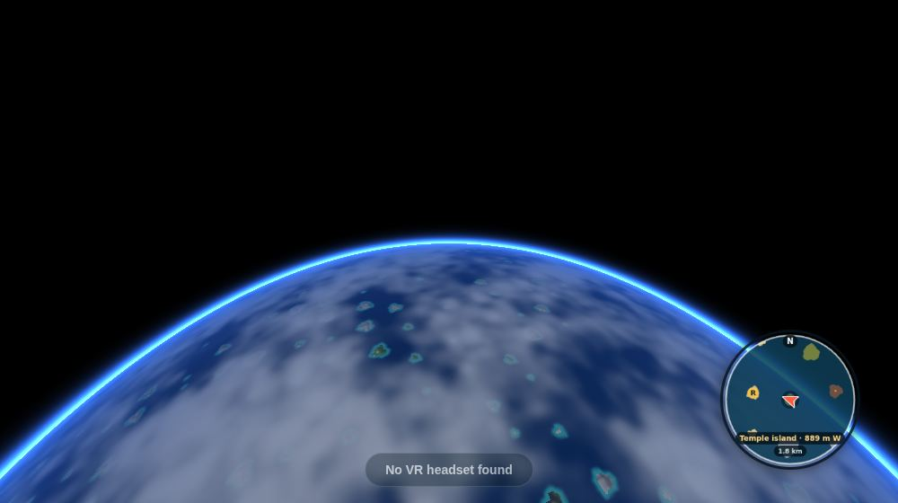
From 9 km up. Islands with their shallows on a round sea, under the atmosphere's rim.
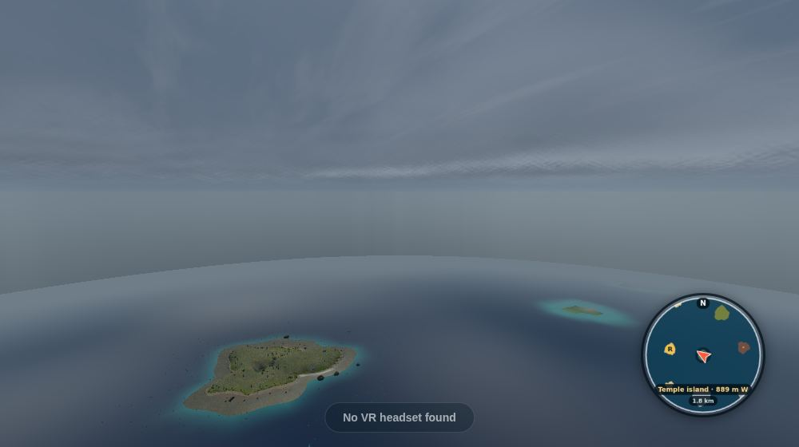
600 m. The horizon bends away; the detailed sea melts into the planet's own.
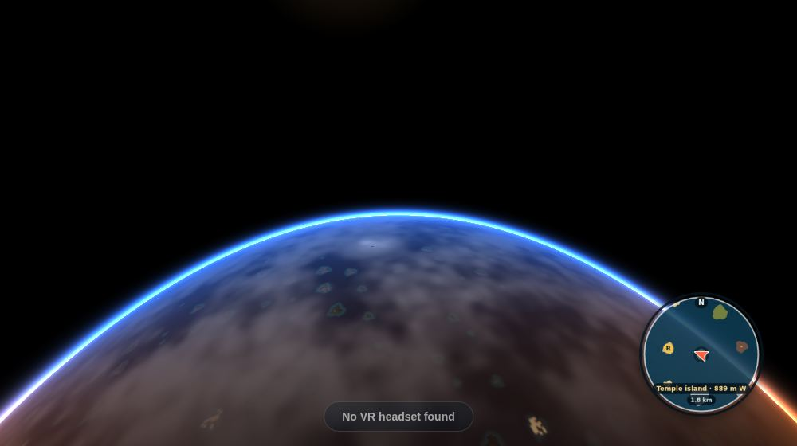
The terminator. A real day side and night side, with the sunset colours along the edge.
The sun stands still; the planet turns
The sun is fixed in space. The planet turns once a day under it, and you are on it, so your sunrise and sunset come from where you stand: fly east and the day gets later. The Time buttons set the time of day where you are. The moon circles the planet about every eight and a half days, lit by the same sun, so its phases are just where it is relative to the sun, and you can see them from the ground and from space.
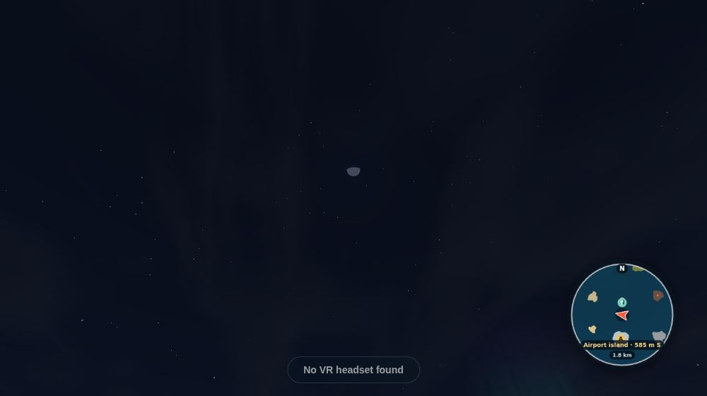
The moon, drawn as a lit ball, here a waning crescent.
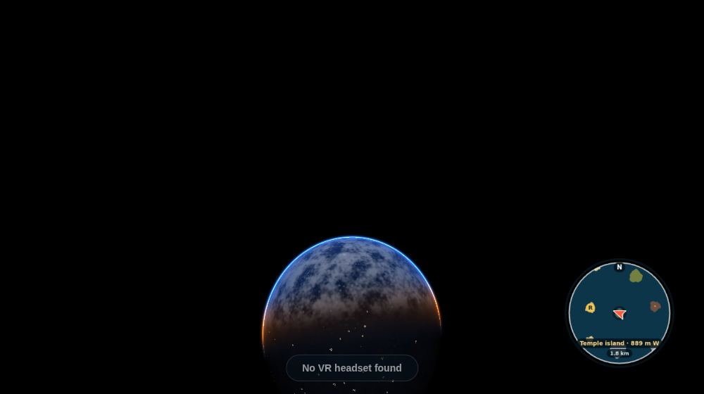
70 km up. The whole globe. Fly with the trigger at up to 7 km per second and the sky is black by 1.6 km.
Lakes
Some of the bigger islands now have a lake, cut into the land below the waterline, with its own water so it holds at any distance.
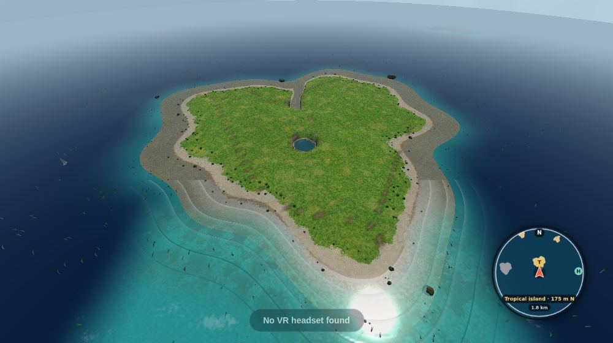
A lake inland on a tropical island.
Other worlds
Since 7.1 you can fly to them, and land.
In space you have a true position, and your speed grows with your height above the nearest world, so a crossing takes seconds and an arrival is gentle (the flight-speed setting chooses how fast, up to 600 km/s). The Moon, the red world, the ice world and a ringed gas giant sit at their real places and sizes. Come within 6 km of one you can land on and the ground is built round you, in four tile sizes, from a height function of the place on the world, so a given spot is always the same land. The gas giant has no ground: you can circle it, and that is all. Each world has its own sky, light, fog and gravity, and the home planet hangs in the sky as a sphere.
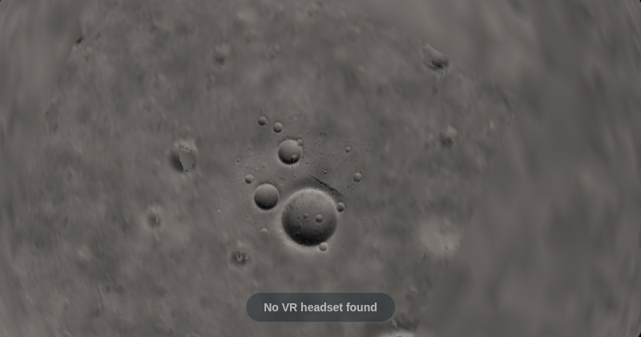
The Moon. Craters of every size, from basins to pits, in low gravity.
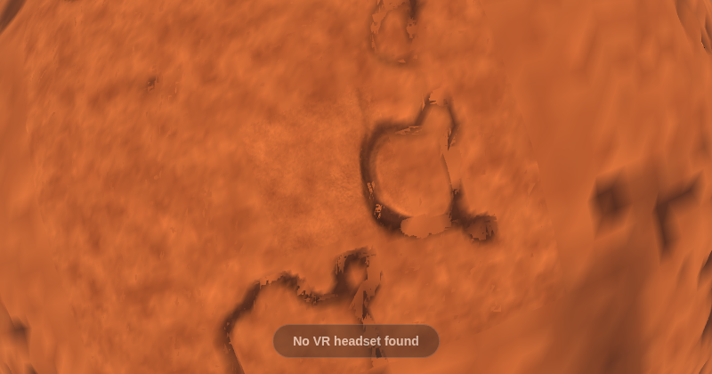
The red world. Rust desert, mesas and winding canyons under a pink sky.
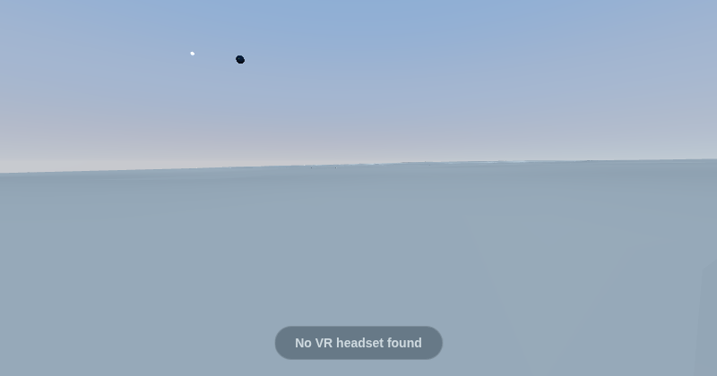
The ice world. Glaciers and crevasses under a pale blue sky.
Finding your way in space
New in 7.3 and 7.4.
All four planets circle the sun in one flat plane, the nearer ones faster, and each world is lit from where the sun really is. A panel in front of your eyes shows your speed (and the top speed at that height), the name and distance of every world and the sun, with an arrow at the edge of the view when one is off to the side or behind you. The compass at the lower left shows the orbital plane as a ring: the green arrow points up out of it, the yellow dot is the sun. Roll with the right stick sideways (Q / E on a keyboard) and pitch with it forward and back (F / R). Coming in to a world, the horizon slowly turns level with it, so landing never flips your view.
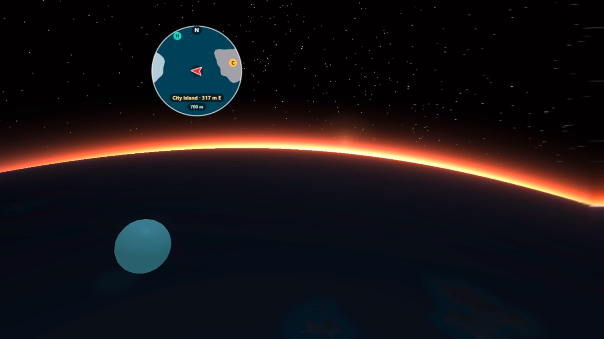
The limb. Stars behind a thin glowing atmosphere, with the minimap still with you.
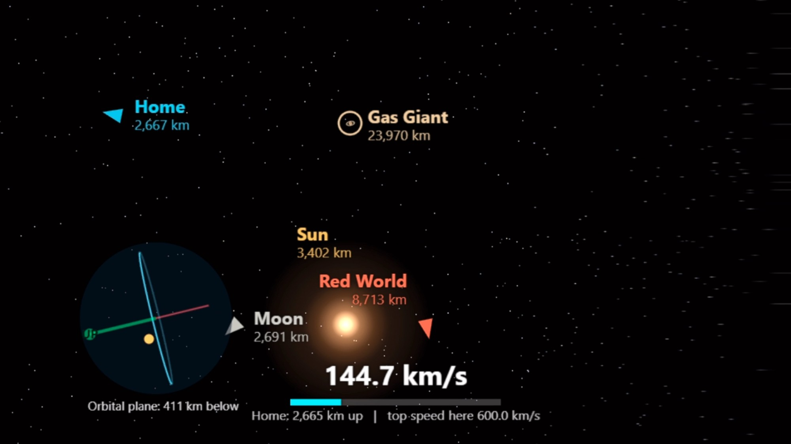
The space HUD. Names and distances, speed against the top speed, and the orbital-plane compass.
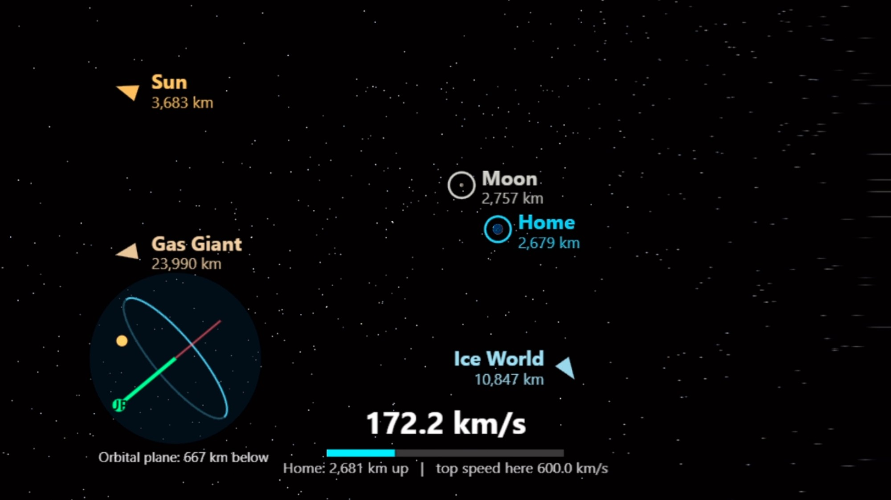
On the way. Far worlds are circled so they are easy to find; arrows point to the ones out of view.
The land at home
New in 7.4.
Since 7.5 islands are no longer confined to their own cell: the land is the smooth union of the islands around you, so big ones fuse with their neighbours into one landmass. The islands have a new relief generator: rolling hills and ridged ranges, bent by a warp so nothing lines up, and the biggest islands are larger. Lakes are shallow bowls about a metre deep, with very subtle ripples.
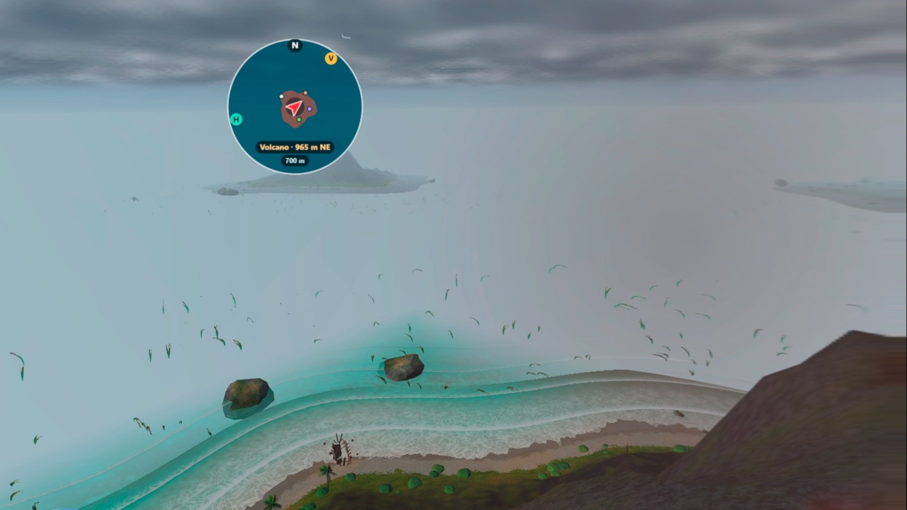
A volcano coast under a grey sky.
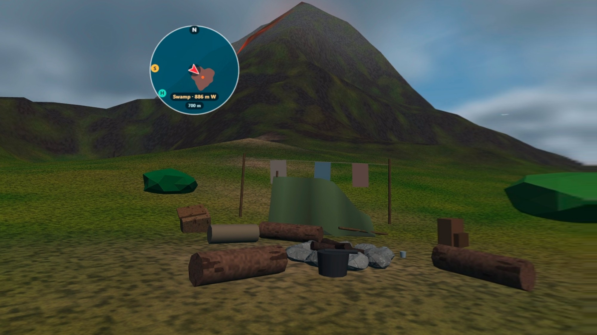
A camp below the volcano's slopes.
The real Earth, 1/240 size
8.14 to 8.21: the islands became the planet we live on.
The planet is now a miniature of the real Earth, a 26.5 km radius globe with the real coastlines, mountains, lakes, rivers, deserts and ice. Heights come from Terrarium elevation tiles stitched into an 8192 by 4096 grid and packed into the scripts, so the game still opens by double-clicking index.html: nothing is fetched. Paris is a few kilometres from Rome. A kilometre on the screen is about 240 km of the real thing, and mountains are exaggerated three times (not ten: Everest is about 86 m tall here), which you can change with ?vex=.
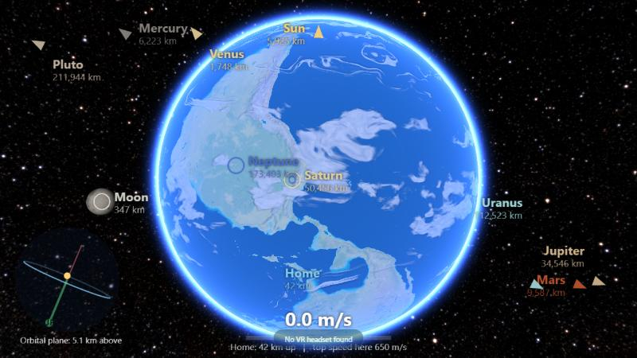
From orbit. Real continents, real clouds, a bright sun glint on the sea, and every world of the solar system named with its distance.
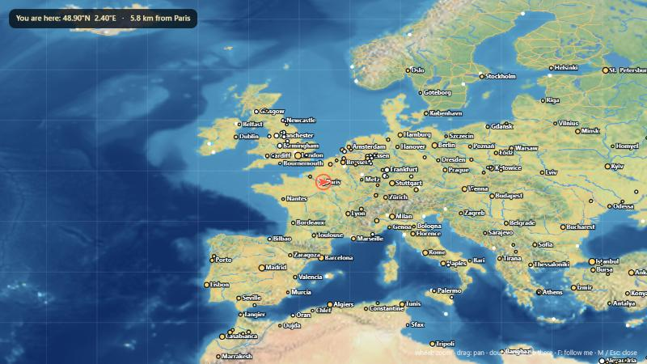
The map (M). Pan and zoom, search for a place, click to teleport; it shows you, the cities and the airports.
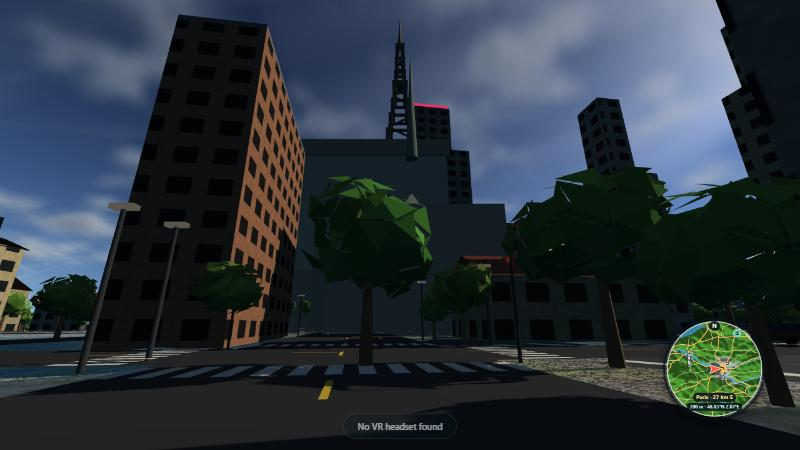
Cities. From Natural Earth: each real city of 400,000 people or more gets streets, blocks and suburbs in a style that follows its region.
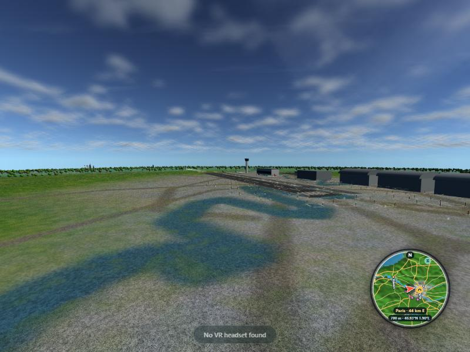
Airports, seventy-two of them at their real places, with runways, a tower and hangars. Landmarks, temples, volcanoes, oil rigs and wind farms too.
Biomes, snow lines, weather and wind follow the real climate where you stand (a storm no longer covers the whole planet), and from space the clouds are the real cloud picture, drifting. Roofs and ship decks can be stood on. Lakes are real water at their real heights, and dry land has no sea in it.
Spaced apart and the right size
Features keep their own ground: airports, temples and landmarks are spaced apart, and city blocks, suburbs, towns and trees keep out of them. Objects are drawn smaller for the small planet (a single knob, ?objs=, default 0.45), with trees, airports and ships following it.
A Spawn menu
8.22 onward: put things into the world, then use them.
The menu has a Spawn tab beside Teleport. It holds everything below, five categories at a time, with page buttons and no scroll bars. Spawning starts a placement: aim, see the thing as a transparent green ghost (red where it cannot go), click to put it down (wheel or R turns it, Esc cancels). Put out as many as you like; Clean up in the menu takes them all away.
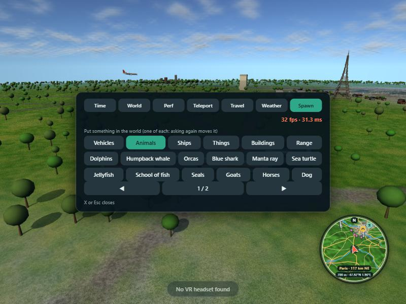
Spawn. Vehicles, Animals, Ships, Things, Buildings and Range.
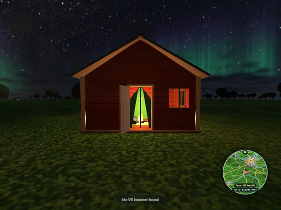
A house with an inside. And a tent, and a campfire. Their look follows the region: Mediterranean, northern timber, tropical stilts, mud brick, tiled roofs, flat white roofs.
Things you drive
A car and a boat, a small plane, and a spaceship, each with a cockpit you see from inside, where the view stays open. The car and boat stay where you leave them, the plane is gone when you step out, and the spaceship stays exactly where you left it, with blinking lights so you can find it from far away.
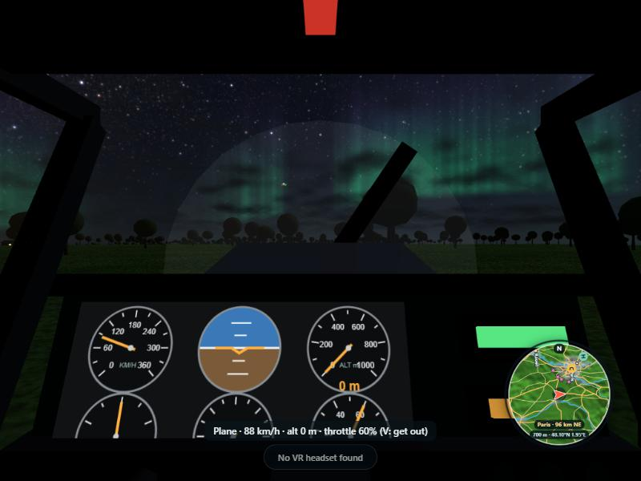
The plane. Six working dials (speed, horizon, altitude, climb, heading, throttle), a yoke that moves, and a throttle that holds.
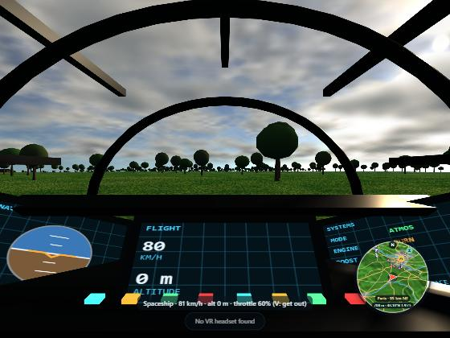
The spaceship. A canopy of ribs and a console with three live screens. It flies up through the sky into space, and lands on other worlds.
Life from Coastline
Dolphins, whales, orcas, a shark, a manta, turtles, jellyfish and fish schools; seals, goats, horses, a dog, a cat and ducks; gulls, pelicans and cormorants; sailboats, a tour boat, a ferry, a tanker, a cruise liner, a container ship, the coast guard, a trawler, buoys, an airliner, a small plane and a hot-air balloon. They are the models and ideas from your Coastline project, and some of them are always about you: the sea has dolphins and boats, the land has goats and horses. ?life=0 turns that off.
The starship
8.25: a big ship you can walk about in, while it flies.
8.31.1: on another world, M opens that world's own map (its texture, with you, your ships and what is known of it); the panel beside the minimap tells you whether you stand on the day or the night side, and the temperature there is calculated from the star's light, the world's albedo and its air.
8.31: walk in and out as you would a house. Walk down the stern ramp and you step out onto the ground, on Earth or on another world; walk back up it and you are aboard, with no key. In space the same ramp lets you out into the dark: the ship keeps its place and turn, you float beside it, and floating back into its bay brings you aboard (V in space takes you to the ramp; the small spaceship lets you out with V and takes you in when you float up to it). The hull is new: a bevelled slab with a domed bridge, paired nacelles on pylons, panel lines and plating, a lit ramp bay and tail fins.
The starship is about 65 m long. Walk up its stern ramp into a cargo hold, through engineering with its glowing reactor, along a corridor past the crew quarters, medbay, mess, armoury, lab and observation lounge, to the bridge with the captain's chair. Inside, you always stand on the floor: in the air, in space, in any attitude the ship takes. The windows show whatever is outside.
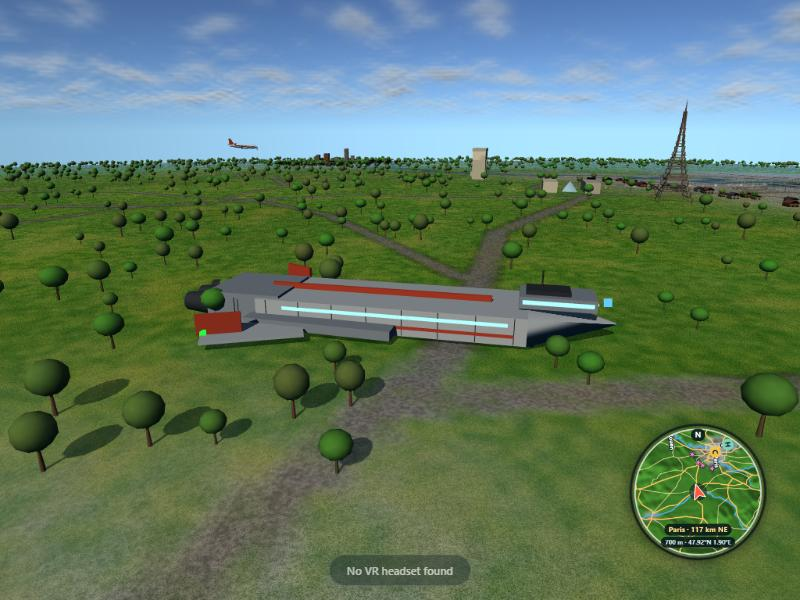
Outside. A wedge hull, a bridge tower, swept wings, three engines and landing legs.
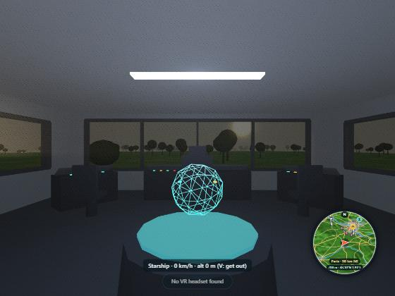
The bridge. A hologram table, helm screens and big windows.
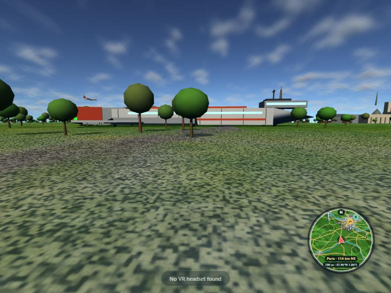
Landed. About 65 m long: bridge and tower at the front, cargo hold and engines at the back.
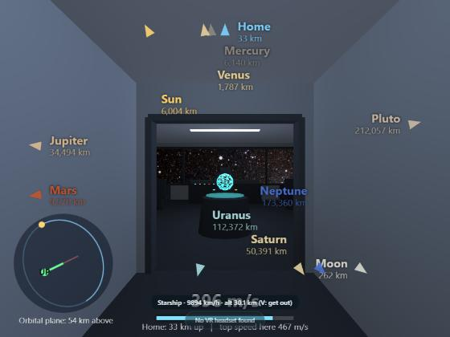
Walking in space. The ship carries on at its throttle while you stand up and walk its length.
Press G at the chair to take the helm, and again to stand up. Land it and press V to step out.
One way to fly both ships
The small spaceship and the starship fly the same way near the ground, near other worlds and in space. The left stick sets the throttle (push forward to speed up, pull back to slow down, let go and it holds) and yaws left and right. The right stick pitches (forward points the nose down) and rolls. Hold the left grip and the ship brakes to a stop; the right trigger lifts it straight up and the right grip lets it straight down, so landing is easy. On a keyboard: WS throttle, AD yaw, RF or the up and down arrows pitch, QE or the left and right arrows roll, Space brakes, Shift boosts. The old trigger-and-point flight is kept for flying on foot.
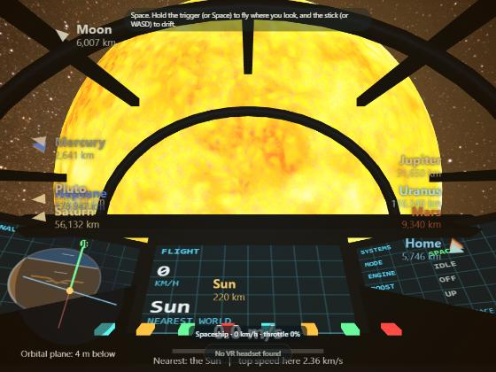
The Sun, from Solar System Scope's texture, very bright, and a world you can fly down toward like the gas giants. The screen warms toward white as you near its surface, and the ship holds there.
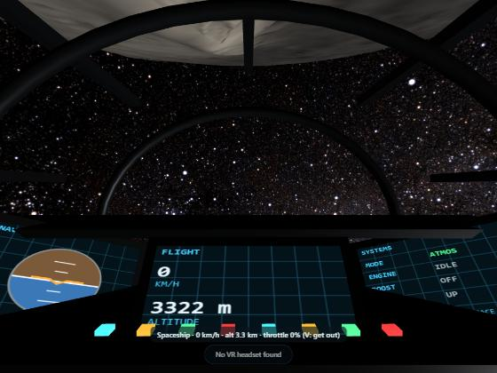
Landing on the Moon. Near a world the ship slows itself, comes in gently, and sets down; step out and it stays there.
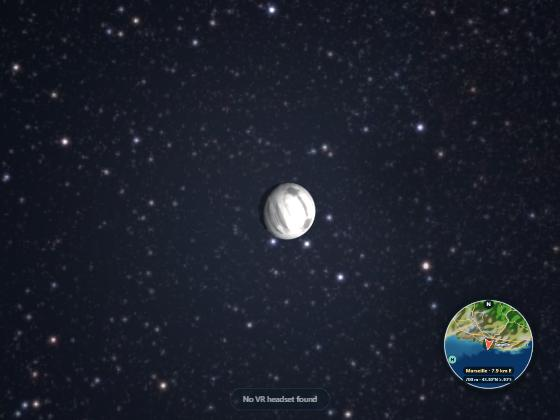
The Moon from the ground is a solid ball lit by the sun, with the right phase, and no stars show through it.
Other stars: a jump drive
8.28: six real nearby systems.
Fly a ship up into space, away from any world (three radii), and open Teleport > Exoplanets (pick a star, or one of its planets, and the drive takes you right beside it). The drive charges for ten seconds while the stars stretch, the screen flashes, and you arrive a little way out from another real star, at rest and facing it. Jump back with "Home". The systems, with their real distances: Proxima Centauri (4.2 ly, three planets), Alpha Centauri (4.4, a pair of stars), Barnard's Star (6.0, four small planets), Sirius (8.6, a white star and its white dwarf), Epsilon Eridani (10.5, a gas giant) and TRAPPIST-1 (40.7, seven planets close in round a dim red star). 8.30: every world that is not a gas giant can be landed on: Venus (volcanic plains under an orange haze) and the rock, desert, lava and ocean planets of the other stars each get their own generated ground and sky. The gas giants still hold you at their cloud tops. The ocean worlds are one flat sea with islands, and you walk on the sea floor: there is no water surface out there yet.
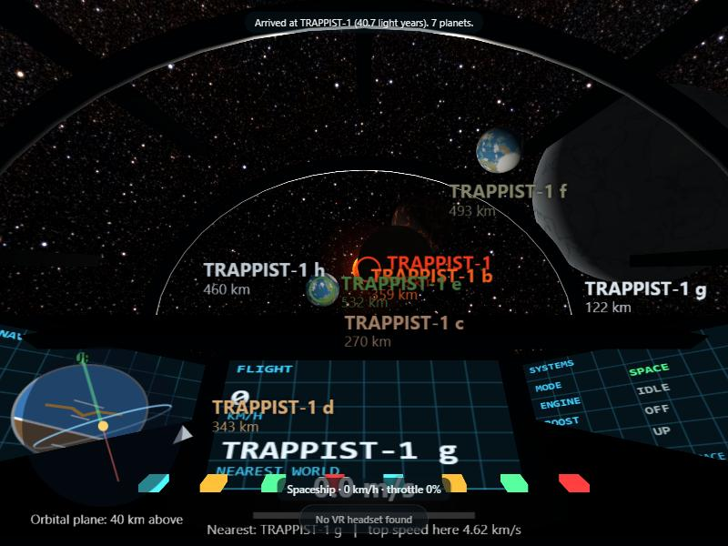
TRAPPIST-1. Seven worlds on their real orbits round a red dwarf, each named with its distance. Two are generated ocean worlds.
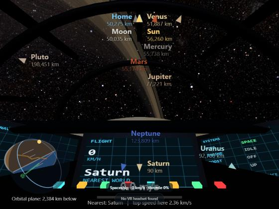
Saturn's rings are a textured plane in the planet's real equator, and keep their place in space however you turn the view.
The sizes, colours and orbits are real where they are known. The surfaces are not: nobody has seen them, so each is generated from its kind (rock, ocean, ice, lava, desert, gas). At home you can see that plane in the sky: the planets' real orbits as rings, in space (O shows and hides them, or Travel > Orbital plane). In the Solar System every planet now lies in one plane, the ecliptic, with its real north pole (Saturn leans 27 degrees, Uranus lies on its side, Venus turns backward), and the Moon keeps one face toward home.
A gun range, and a camera
8.22 and 8.25: from your Zap Range and Coastline projects.
The range. Seven weapons, a bench with name plates, and hologram targets: balloons, archery discs, armoured plates and drones.The camera (C). Zoom with the wheel, click to shoot. Each photo gets a star rating; the album saves them as pictures.
Pick a gun up with E (or a grip), fire with a click, Space or the trigger. Shots hit targets, the ground, the sea, buildings, animals, boats and your vehicles. The Spawn tab's Range list has the bench, the targets and one button for each weapon in your hand.
Speed, lights and options
8.26: making it run better, on a screen and in a headset.
The lights were the first suspect: every lamp in the air is a ray-marched volume. There is now a Volumetric lights setting (Off, Low, Medium, High, Max) that sets how many lights are marched and how finely, and Off skips them entirely. The surprise was the trees: about 34,000 of them at 100 triangles each were most of what was drawn. A typical scene went from 6.5 million triangles to 2.8 million on the default settings.
Volumetric lights
Off / Low / Medium / High / Max: how many lights and how many steps along each
Ground detail
Low / Medium / High: how far out each level of terrain detail and the full-size trees reach
View distance
Near / Normal / Far: how many tiles of the Earth are kept around you
Automatic resolution
On a screen, lowers the resolution a little when the frame rate drops and gives it back when it recovers
Also done
Foveated rendering in a headset; far tiles update a quarter as often; the inside of the starship (hundreds of boxes) is merged into a few dozen draw calls; trees are fewer and lighter
Controls
VR on Quest, or keyboard and mouse on a screen.
Move
Left stick (VR), W A S D
Turn
Right stick (smooth), drag the mouse
Fly a ship
Left stick: throttle (it holds) and yaw. Right stick: pitch and roll. Left grip: brake. Right trigger: up, right grip: down (to land). Keyboard: W S throttle, A D yaw, R F or up/down arrows pitch, Q E or left/right arrows roll, PageUp / PageDown up / down, Space brakes, Shift boosts
Starship
G sit at the helm or stand up; walk with the move keys; V to step out once landed
Get in or out of a vehicle
V (or Y in a headset)
Camera
C raise it, wheel zoom, click or F shoot, Tab album
Space HUD
H shows and hides it (also in the Travel tab)
Run
Click the left stick, hold Shift
Jump
A / Space
Fly
Jump, then hold a trigger and point (hold Space on a screen)
Swim
Stick, or hold the triggers and sweep your arms
Pick up / put down
Grip near it, E
Use something
Trigger with a hand close to it, E
Boat
Y to board or leave; left stick drives
Menu
X (left controller) / X
Minimap size
Menu, Shift+M
Map of the Earth
M (wheel zoom, drag, double-click to go there, Esc closes)
The menu. Time and weather, world options (aurora, stars, waves, sand detail, festival lanterns), performance, teleport to any kind of place, and travel (flight and boat speed).
A real calendar, and real eclipses
New in 9.11: pick any date from 1900 to 2100.
The game's clock is the calendar's. A day is a day (24 hours by default; the Time page can make it an hour or eight minutes, and the speeds go up to 4096×), a year is 365 days, and the planets, the sun and the moon are where they really are on the date. The Earth is turned to the date as well, so noon here is the real noon here. The new Calendar page changes the year, month, day and time of day, and takes you to any of the 452 solar and 457 lunar eclipses of 1901 to 2100 from NASA's catalogue, with a few famous ones to start with.
The Calendar page. The year, month and day, the time of day here, the next and last eclipse, and a few famous ones.
The eclipse buttons take you to the right place: for a solar eclipse where the catalogue puts the greatest eclipse, an hour before it; for a lunar one where the moon is overhead. The map opens with the place marked. A lunar eclipse is always at night, because the moon has to be opposite the sun: the daytime one is the solar one.
It is checked against the catalogue, not just drawn to look right. The moon's place comes from Jean Meeus's series, and for all 452 solar eclipses the moon's shadow axis agrees with the catalogue's own number (gamma) to within 0.003 Earth radii, about 20 km. The places of the greatest eclipse of 2017 Aug 21, 2024 Apr 8, 1999 Aug 11 and 1919 May 29 come out within half a degree of NASA's.
Almost total. 21 Aug 2017: the sun is a thin crescent behind the moon, just before totality.Totality. The black disc, its corona, and a sky that has gone dark. The sunlight on the ground goes to zero at the catalogue's time.
The shadow of the earth on the moon
The shadow is the planet's own circle, with its curved edge, a penumbra and a copper umbra, drawn on the moon's face in the sky and from space. The moon is in proportion now (0.27 of the planet's radius, 60 radii away), so it is as big in the sky as the sun, and eclipses are as rare as in life.
Entering. 8 Nov 2022: the umbra's curved edge crossing a full moon.Deep partial. Half the moon is in the red shadow.Total. The blood moon, with Uranus and its moons beside it, as the real sky of that night had it.
Where the planet's shadow falls on a station or a ship in orbit, and on Saturn's rings, the light goes with it; and when the moon's shadow crosses the planet it is a soft penumbra with a small dark core.
Moons, a belt of rocks and ringed Saturn
New in 9.13: the moons are there, at their real sizes and distances.
Thirty-one moons of Mars, Jupiter, Saturn, Uranus, Neptune and Pluto circle their planets in their real orbits, in the same proportion to their planets as the planets are to the home world, and the small ones are the odd rocks they are: Phobos is a lumpy 26 by 22 by 19 km, Hyperion a sponge, Amalthea a red potato. Ceres is in the belt. You can fly up to any of them and orbit it; you cannot go below the surface (landing on them is not there yet).
Phobos in front of Mars, with Jupiter a dot beyond.Saturn, its rings and its shepherd moons.
The asteroid belt
Between Mars and Jupiter (2.1 to 3.3 AU), and only there, are rocks of ten to a hundred metres and more. You cannot see them from the home planet or from afar (real asteroids are tiny and millions of kilometres apart): they are there when you are among them, a few kilometres round you, thickest in the ecliptic plane and thinning as you leave it. It is denser than the real belt so there is something to fly through.
In the belt. A 75 m rock, with others round it, and Saturn a speck far off.Inside the rings. Close to the ring plane the flat picture is cut away and the rocks are there, going round the planet at their own speed.
Flying through Saturn's rings. The bands of the ring streak past at speed; behind them the night side of the planet, and the far edge of the ring as a thin line. The ball hides the far half of the ring behind it, and the ring is drawn in its place among the worlds, so a planet in front of it covers it.
The real height of the Moon and Mars
New in 9.14, rebuilt at the Earth's resolution in 9.17.
The Moon and Mars are built the way the home planet is: a real height grid with the fine relief it cannot hold on top. The Moon's grid is NASA's LRO laser altimeter (SVS 4720, sixteen pixels a degree, about 8 m a sample on the game's small Moon) and Mars's is the Mars Global Surveyor MOLA topography (sixteen pixels a degree, real heights above the areoid, about 15 m a sample), shown at about six times true height so it can be walked. The basins, the great far-side crater, Olympus Mons, Hellas and Valles Marineris are where they are. On top come the craters (twelve sizes, each with its own age: fresh ones deep and sharp with a blanket of ejecta, old ones shallow and worn, the largest with terraced walls and central peaks) and a noise whose fine detail fades on steep slopes, so faces are smooth and flats keep their detail. The colours of both come from the world's map, as you saw it from orbit.
Mars on the real grid, from 2.6 km above Valles Marineris (9.17): MOLA's heights, with the fine relief on top.The Moon near Tycho, from 900 m up in morning light (9.17).
Valles Marineris, from 2.8 km up (the 9.14 ground).The flank of Olympus Mons. A great shield, scaled to the game's world.The Moon, from 2.8 km, with the sun low and the stars out all day.
Out at Pluto the sun is a dim dusk, not the home planet's noon: the sun's light on you now follows your distance from it.
Going there
The Teleport page has a category each for the Moon and Mars: the six Apollo landing sites, Tycho, Copernicus and the seas, the far side and the poles; Olympus Mons and the other volcanoes, Valles Marineris, the basins, and the places the landers came down (Viking, Pathfinder, Spirit, Opportunity, Curiosity, Perseverance and the rest). Each puts you on the ground at that place of the world's map, wherever you were. The other categories are Worlds (to fly up to a world and orbit it) and Stars (the exoplanets). The time slider now works on these worlds too: it sets the hour of the place under you, on the ground or in orbit above it. And the maps of the other worlds show you, the sun and the day and night side where they really are.
How we got here
One conversation, built a request at a time.
Earth and Solar Sim (formerly Lantern Tide) began as a way to reuse the ocean from Coastline, your coastal exploration project, in a new VR experience. Every version below grew out of one running conversation with Claude Code, which wrote the code, ran it in a headless browser to check it, and committed it. Here is what changed at each step, and a few of the ideas that set it off. Nothing here has been tried on a headset by the assistant; you have been the one testing on the Quest, and the fixes you asked for are part of the story.
1.0A raft on borrowed water
A raft on Coastline's ocean: Gerstner waves, foam, caustics, sky, with floating lanterns as the game.
2.0From raft to beach
The raft became a beach. Festival lanterns, a procedural sand shader, wind-driven palms, a day that lasts eight minutes. Smooth turning replaced snap turning.
2.1Sand, fire and a lighthouse beam
“i want my feet to make imprints in the sand”
Footprints and drawing in the sand, a campfire that lights the beach, a conical lighthouse beam, god rays through the clouds, better materials for trees, rocks and the lighthouse, and a run mode.
3.0The reef, the weather and a boat at a dock
Coastline's reef, kelp, fish schools, random weather and fog, and the boat moored at a new dock behind a breakwater.
3.1 – 3.3Things to pick up, and a menu to find them
Fireworks you can light, a drone with a hand controller that has a live screen, a VR menu with a fps meter, and performance settings for the costly sky.
3.4 – 3.5Making the sky smooth
Clouds and god rays are drawn into a small cached map of the sky and blurred, which removed the grain and made them cheap. Sunsets turned orange.
3.6 – 3.8Rocks to climb, water to swim in
A tabbed menu, dug-in sand marks, layered rock material, jumping onto rocks, swimming with underwater visuals and sound, arm-stroke swimming, and floating with just your head out.
3.9 – 3.12A menu that follows you, flight, and the boat
Menu that follows you, teleport tab, flight, and driving the boat with Y.
4.0An endless sea of islands
The streamed island world, volcano, temple, swamp and city islands, three hand-made places, a minimap, and a planned structure for adding more places (see WORLD_DESIGN.md).
4.1 – 4.2Life on the islands and out at sea
Ships, an oil rig, wind turbines, gulls, planes and an airport island, roads with power lines and cars, farmland and sea cliffs. Buildings were fixed to be solid, and roads were settled onto the landscape.
5.0The world becomes a planet
“make the entire world a sphere like a planet”
The world became a planet: a curve applied to everything, a ray-traced sphere standing in for the far sea, a baked map of the islands for the view from space, an atmosphere, sun, moon, stars and neighbours. Flight became much faster.
5.1 – 6.2Chasing a white-out, and four new places
A white-out that only some graphics cards showed was found by bisecting with switches: the curved-world patch applied to sprites broke Direct3D 11 on NVIDIA cards, so sprites are no longer bent. The review pass added four authored places, discovery messages, richer terrain and vegetation, a calmer minimap, safer diving, and a sky that goes black sooner.
7.0A true sphere that turns under a fixed sun
“I want this to be a real sphere”
The world became a cube-sphere of six faces joined at the edges, with one planet size at every height, a map of the whole planet baked from the same functions that stream the islands, lakes, a spinning planet under a fixed sun, and a moon with phases.
7.1Other worlds, and a ship fast enough to reach them
Space got a true position and a speed that grows with height, four other worlds at real sizes, tiled ground for the three you can land on, and a fix for a bug where plain materials were curved round the wrong point far from the origin.
7.2Ground worth landing on, and a quiet vacuum
New terrain for the Moon, the red world and the ice world (craters, mountain ranges, canyons, volcano, crevasses, boulders), and no more fish or underwater feel in space.
7.3A real solar system
The four planets now circle the sun in one flat plane and are lit by it from where they really are. Stars are back, the horizon eases level as you approach a world instead of flipping at landing, flight is much slower near worlds, and waves are silent out there.
7.4Finding your way between worlds
A navigation HUD for space (speed, world names and distances, an orbital-plane compass), roll with the stick, stars behind planets, a menu that works everywhere, new relief and larger islands at home, shallow rippling lakes, and the code split into a js/ folder.
7.5 – 7.6Landmasses that join, and a city that lives
Islands now join into larger landmasses, with the z-fighting at the seams fixed. The city was rebuilt as a patch of uneven streets with varied buildings and roofs on rolling ground, parks, a fountain, street trees, crosswalks and traffic lights; the lamps and car headlights throw soft cones of light that fade toward their edges.
7.7Rain and a solid sea
Rain, lightning and every glow made of points or lines had stopped drawing, because the world-curve patch needed a camera matrix that three.js only supplies to mesh materials; they now get it directly. Below the horizon the sky is now the deep sea's own solid colour, so nothing shows through the water.
7.8Evan's water
The whole sea was replaced with Evan Wallace's WebGL Water, grown to an open sea: a ripple simulation fed by wind, rain, swimming, the boat's wake and splashes, with caustics traced by sending sunlight down through the surface to the sea floor. The old swell, breakers, foam and drifting-cell caustics are gone.
7.9Ray-marched light
Sun shadows and ambient occlusion marched across the terrain's height field, islands shading the sea, and ray-traced reflections of the islands in the water. The sea no longer creeps up over the land, and the last fake caustics are gone.
8.0Ocean waves, lapping, wet sand, shadows
Real ocean waves roll in toward the land (a swell of many wavelengths and wind chop), with Evan's ripples on top. The waterline laps up the beach and leaves dark wet sand that dries back to gold. The sun casts shadow maps from buildings, props, the boat and the dock.
8.1Shadows that show
Palms, rocks, reeds and buildings now cast shadows from the sun (the game draws the shadow map itself), the sand dries in the order the water leaves it, and the sea reflects a little less of the sky.
8.2Gerstner waves
The swell is now Gerstner waves: crests sharpen and troughs flatten as each point of the sea rides a small circle. The boat, swimmers and caustics follow the same surface.
8.3Sea foam, and waves that meet rocks
Breaking crests foam in a lacy trail that fades. Waves bounce off rocks, the boat and the dock's piles, are sheltered behind them, and foam where they strike.
8.3.1The freeze fix
Fixed a not-a-number in the wave height that froze the game when the camera moved. Failures now show a message instead of a frozen screen, and ?lite=1 turns the heaviest maps down.
8.4Perlin terrain, terrain shadows
The land is built from Perlin fBm and ridged noise with a simplex warp: rolling dunes and hills on the home island, gently rolling low islands, and sharper mountain ranges. The terrain casts and receives real shadows, and its height map is drawn from the meshes themselves.
8.5No ring, a boat wake, taller land
The pale ring seen when flying high over the ocean is gone. The boat leaves a foamy wake, waves bounce off the dock's piles, and the mountains and dunes stand taller.
8.6The ring, wind sound, swaying trunks
The pale ring high over the ocean is gone, the sound follows the wind instead of breathing waves, and whole tree trunks bend with the wind.
8.7Lava, rock bombs, finer land, honest water
Much finer terrain, a lava mesh with a flowing texture, and a volcano that throws glowing rocks which land and cool as boulders. The water gained two shadows (a faint one on the waves, a solid one on the sea floor), no more ring at the far waterline, and light absorbed along the whole path through water so submerged things fade out with depth.
8.14 – 8.16A real Earth and a real solar system
“lets make the mini earth” and “make the planets like the real solar system”
The island world became a 1/240 model of the real Earth: real heights, land and sea, climate and biomes. The planets got real orbits and textures, the sky a real Milky Way, and from space the real clouds, the land and a sun glint on the sea.
8.17 – 8.19Maps, rivers, cities, landmarks
“minimap needs to work, also add a map of the earth when i press m”
A minimap and a map of the Earth (click to teleport, search for places), snow-capped mountains, rivers, roads, borders and cities from Natural Earth, finer terrain, a 54-place teleport list, landmarks, and standing on roofs and ship decks.
8.20No sea on dry land, and a better airliner
“i saw water even in places that are 100's of meters above ground”
Water was kept off dry land and real lakes were made with their real heights; objects were drawn at one global scale.
8.21Declutter, calmer mountains, smaller things
“buildings are ontop of eachother, hiding airports and landmarks”
Spacing rules for features, mountains at three times instead of ten, objects at 0.45, and the airports scaled with them.
8.22Spawn, Coastline, camera, faster space
A Spawn menu, vehicles you drive, Coastline's animals, boats and aircraft, its camera and album, slower storm clouds, a categorised teleport menu, and space flight about thirty times faster.
8.23 – 8.24Cockpits, controls, houses, a solid moon
A Spawn tab, open cockpits, pitch and roll and a throttle that holds, blinking lights, houses and tents with insides in the style of the region, a solid sun-lit moon, then real working cockpits for the plane and the spaceship.
8.25A starship, a gun range, a space HUD switch
“make another spawnable a bigger class ship, it will have walkable interiors”
A starship with a walkable inside that rides with the ship, Zap Range's weapons, bench and targets, and a switch for the space HUD. 8.25.1 fixed a menu that had grown scroll bars and a hull that rendered black.
8.26One flying scheme, landing anywhere, lighter
“left stick throttle forward back, left right yaw, right stick pitch roll”
Both ships fly with the same controls everywhere, brake with a grip, and land on other worlds. Volumetric lights have a setting, trees are lighter, the ground has levels of detail, and the picture can lower its own resolution.
8.27The Sun as a world, and up and down
“sun should be like the other planets, use texture from this site, let me fly close in its atmosphere”
The Sun from Solar System Scope's texture, very bright, a world to fly down toward; no altitude in space; the right trigger lifts and the right grip lowers the ship to land.
8.28A jump drive, and planets that stay put
“what would you think about interstellar flight to other star systems nearby”
Six real nearby systems with generated surfaces, reached by a ten-second jump. Planets and Saturn's rings are now oriented in inertial space (the real poles, one plane), so they no longer swing when the view turns.
9.0 – 9.2A new folder, space at 3 km, sound options
“i think space should start much sooner now it's 30km? that's very high”
The project moved to its own folder. Space begins at 3 km (the haze from 2.94 km), the version shows on the menu, and the sounds, the music and a mute have their own settings.
9.3 – 9.5A space station you can walk in, and an orbit that holds still
“maybe once i'm on board the station it could orbit the planet, let me toggle that somewhere on the station”
A wheel station in the style of 2001 with a hub, spokes, windows, an airlock and an orbit console; wheel speed modes from EVA to warp; always turning with the planet within 10 km, and an orbit track and an arrow on the maps. 9.5.1 and 9.5.2 fixed a planet that seemed to turn under you and a track that drifted.
9.6 – 9.7A 24-hour day, three orbit modes
“needs 3 orbit modes, orbit is the regular orbit, geostationary follows the planet rotation above the same point in the map, and static meaning i'm holding in space”
The day is 24 hours (and selectable), with time speeds up to 4096×, so an orbit takes its real ratio of a day. Orbit, geostationary and static on the station's console and on the spaceship, which also lets you step out in space.
9.8 – 9.10Shadows of worlds, clear skies, a moon in proportion
“would planets project shadows on other planets too? like lunar and solar eclipse”
The planet's shadow on stations and on Saturn's rings, a lunar-eclipse button, a clear sky with no cloud at all when the weather is clear, the moon at its real size and distance, and the sun's disc with the moon crossing it: the crescents, the corona and the earth's shadow across the moon.
9.11A real calendar, 1900 to 2100
“maybe use calendar data and planet locations, make a calendar from 1900 to 2100 selectable on another page and it will be used to calculate the time and position of all planets and moons”
The clock is the calendar's. NASA's eclipse catalogue (the page you pointed me at) gives the 452 solar and 457 lunar eclipses; the moon comes from Meeus's series and is checked against all of them.
9.12Landing without a seam, and dim far worlds
“ice planets are extremely bright, they shouldn't be this bright so far from the sun anyways”
The ground you land on takes its colours from the map you came down on, the world's picture fills the distance beyond the streamed tiles, the landing dip to black is a quarter of what it was, and the sun's light follows your distance from it.
9.13The moons, the belt, the rings' rocks, real heights
“can you add the moons of the solar system planets in their relative size and odd shapes, an asteroid belt between mars and jupiter, and the rings of saturn should be made of small rocks up close when i fly through them”
Thirty-one moons and Ceres, the belt, and the rocks of Saturn's rings.
9.14The real height of the Moon and Mars
“there's a displacement map of the moon here, choose one to generate terrain from. one for mars, those two can be more realistic”
The Moon's ground follows NASA's LRO altimeter map and Mars's follows JPL's MOLA topography picture (a shaded relief, turned into heights by integrating along the light, smoothed). Craters and roughness ride on them, and the colours come from the map you came down on. “lets keep what we have until now, and think over how to improve terrain generation later.”
9.15Craters done properly
“can we do something like this for the planets?” (a paper on procedural planetary multi-resolution terrain)
Twelve sizes of crater on the Moon and eleven on Mars, each with its own age: fresh ones deep with a sharp rim and a blanket of ejecta, old ones shallow and worn, the large ones with terraced walls and central peaks. The cliff at every crater's rim is gone.
9.16Eroded-looking ground, and tiles that fit
“yes try it make sure all the tiles fit without strange borders between them too”
A noise whose fine detail fades on steep slopes (smooth faces, detail on the flats), and the tiles of different sizes now end exactly on one another: the edge of each fine tile slides onto the coarse tile beneath it, in height, shading and colour.
9.17The real grid at the Earth's resolution
“why cant the planets have higher terrain resolution? borrow the teqniue used to make earth maybe?”
The Moon from NASA's LRO altimeter at 16 pixels a degree and Mars from MOLA's real heights, at about 8 m and 15 m a sample, with the fine relief on top as at home. Also: the home planet no longer draws over a nearer moon, the light and dark of the maps of other worlds, and the time slider on other worlds.
9.18Places on the Moon and Mars, and the rings
“maybe the teleport menu should have options to be on mars surface and moon surface orginise it somehow logically”
Moon and Mars have their own Teleport categories, the maps put you and the sun in their true places, and Saturn's rings no longer show through the planet or draw over the planets in front of them. “flying through saturn rings was a real pleasure it looks so real and inspireing”.
A note on what was tested. Everything was checked in a headless desktop browser with software rendering, at about one frame per second, using scripted visits and screenshots. Frame rate on a real Quest 3 is untested, and the scene is heavy (the sea is drawn twice, and the base reef and sky were already costly). If it stutters, the Performance tab is the first place to look. The screenshots on this page were captured the same way.
Under the hood
The ideas that made it work in a single file.
One formula, two languages
Wave heights, shoreline shape and island height are written once in JavaScript and once in GLSL, kept identical, so physics, boats and the water shader agree.
Deterministic worlds
A cell's hash decides its island, so revisiting a place can never change it. The shaders get the nine cells round the camera as uniforms, and need no geometry to know where land is.
A budget for building
Islands are built in generators that run for a few milliseconds a frame, nearest first: coarse land, cheap instanced trees, then detail as you approach. Places of interest have three levels: a name, a simple silhouette, and a full scene with props, lights and things to use.
A curved world, and a round one
One line in three.js's shared vertex-projection chunk drops every vertex by distance squared, so every material bends with the world. The far sea is a sphere traced in a shader with the same curvature, and a map of all the islands, baked in the background from the same height formula, paints it from space.
Smooth skies
Clouds and god rays are marched into a small map of the whole sky, a quarter of it per frame, then blurred when read back. That is what removed the grain and made it affordable.